1과목: 수질오염개론
1. 미생물의 종류를 분류할 때, 탄소 공급원에 따른 분류는?
2. 분뇨의 특징에 관한 설명으로 틀린 것은?
3. 콜로이드의 성질과 특성에 대한 설명으로 틀린 것은?
4. BOD가 2000mg/L인 폐수를 제거율 85%로 처리한 후 몇 배 희석하면 방류수 기준에 맞는가? (단, 방류수 기준은 40mg/L이라고 가정한다.)
5. 유해물질, 배출원, 유해내용이 맞게 짝지어진 것은?
6. 미생물을 진핵세포와 원핵세포로 나눌 때 원핵세포에는 없고 진핵 세포에만 있는 것은?
7. H2SO4의 비중이 1.84이며, 농도는 95중량%이다. N농도는?
8. 아세트산(CH3COOH) 1000mg/L 용액의 pH가 3.0이었다면, 이 용액의 해리상수(Ka)는?
9. 호수의 성층현상에 대해 틀린 것은?
10. 곰팡이(Fungi)류의 경험적 화학 분자식은?
11. 알칼리도(Alkalinity)에 관한 설명으로 틀린 것은?
12. 물의 특성에 관한 설명으로 틀린 것은?
13. 트리할로메탄(THM)에 관한 설명으로 틀린 것은?
14. 수질오염과 관련된 미생물에 대한 설명으로 틀린 것은?
15. 적조현상에 의해 어패류가 폐사하는 원인으로 가장 거리가 먼 것은?
16. 부영양화가 진행되는 단계에서의 지표현상으로 틀린 것은?
17. 지하수의 일반적 특성으로 가장 거리가 먼 것은?
18. 하천의 단면적이 350m2, 유량이 428400m3/hr, 평균수심 1.7m일 때 탈산소계수가 0.12/day인 지점의 자정계수는? (단,
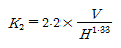
식에서 단위는 V[m/sec], H[m]이다.)19. 경도가 CaCO3로서 500mg/L이고 Ca+2 100mg/L, Na+ 46mg/L, Cl- 1.3mg/L인 물에서의 Mg+2의 농도(mg/L)는? (단, 원자량은 Ca 40, Mg 24, Na 23, Cl 35.3)
20. 지구상의 담수 존재량의 가장 많은 부분을 차지하고 있는 것은?
2과목: 상하수도계획
21. 상수도시설의 내진설계 방법이 아닌 것은?
22. 도시 하수처리장의 원형 침전지에 3000m3/day의 하수가 유입되고 위어의 월류부하를 12m3/m-day로 하고자 한다면, 최종 침전지 월류위어(weir)의 길이는?
23. 하수도시설기준상 축류펌프의 비교회전도(Ns) 범위로 적절한 것은?
24. 펌프의 토출량이 0.1m3/sec, 토출구의 유속이 2m/sec로 할 때 펌프의 구경은?
25. 하수도계획의 목표연도로 옳은 것은?
26. 연평균 강우량이 1135mm인 지역에 필요한 저수지의 용량(day)은? (단, 가정법 적용)
27. 상수시설 중 배수지에 관한 설명으로 틀린 것은?
28. 강우강도
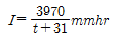
, 유역면적 3.0km2, 유입시간 180sec, 관거길이 1km, 유출계수 1.1, 하수관의 유속 33m/min일 경우 우수 유출량은? (단, 합리식 적용)29. 원심력 펌프의 규정회전수 N = 30회/sec, 규정토출량 Q=0.8m3/sec, 규정 양정 H = 15m 일 때, 펌프의 비교 회전도는? (단, 양흡입이 아님)
30. 상수시설의 도수관 중 공기밸브의 설치에 관한 설명으로 틀린 것은?
31. 하수처리를 위한 생물처리설비 중 회전원판장치에 관한 설명으로 틀린 것은?
32. 하수의 계획오염부하량 및 계획유입수질에 관한 내용으로 틀린 것은?
33. 하수도에 사용되는 펌프형식 중 전양정이 3~12m 일 때 적용하고, 펌프구경은 400mm 이상을 표준으로 하며 양정변화에 대하여 수량의 변동이 적고, 또 수량변동에 대해 동력의 변화도 적으므로 우수용 펌프 등 수위변동이 큰 곳에 적합한 것은?
34. 하수도 시설인 중력식 침사지에 대한 설명으로 틀린 것은?
35. 침전지 침전효율과 관련된 내용으로 옳은 것은?
36. 천정호(얕은 우물)의 경우 양수량
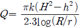
로 표시된다. 반경 0.5m의 천정호 시험정에서 H = 6m, h = 4m, R = 50m의 경우에 Q = 10L/sec의 양수량을 얻었다. 이 조건에서 투수계수 k는?37. 배수탑에 대한 설명으로 틀린 것은?
38. 배수면적이 50 km2인 지역의 우수량이 800m3/s 일 때 이 지역의 강우강도(I)는 몇 mm/hr 인가? (단, 유출계수: 0.83, 우수량의 산출은 합리식 적용)
39. 계획분뇨처리량 기준으로 옳은 것은?
40. 상수도 관종을 선정할 때 고려하여야 하는 기본사항이 아닌 것은?
3과목: 수질오염방지기술
41. BOD 250mg/L, 유입 폐수량 30000m3/day, MLSS 농도 2500mg/L이고 체류시간이 6시간인 폐수를 활성 슬러지법으로 처리한다면 BOD 슬러지부하는?
42. SBR의 장점이 아닌 것은?
43. 펜톤처리공정에 관한 설명으로 가장 거리가 먼 것은?
44. 깊이가 2.75m 인 조에서 물의 체류시간을 2분으로 할 때 G값을 500s-1로 유지하는데 필요한 공기의 양은? (단, 수온 5℃인 경우, Q= 0.21m3/s, μ = 1.518×10-3N·s/m2, Pa: 101.3×103N/m2, P =Pa × Qa × ln[(10.3+h)/10.3]식 적용)
45. 분리막을 이용한 수처리 방법 중 추진력이 정수압차가 아닌 것은?
46. 부유입자에 의한 백색광 산란을 설명하는 Raleigh의 법칙은? (단, I : 산란광의 세기, V : 입자의 체적, λ : 빛의 파장, n : 입자의 수)
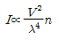
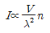
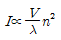
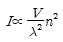
47. 반지름이 8cm인 원형 관로에서 유체의 유속이 20m/sec일 때 반지름이 40cm인 곳에서의 유속(m/sec)은? (단, 유량은 동일하며 기타 조건은 고려하지 않음)
48. 기계적으로 청소가 되는 바 스크린의 바(bar) 두께는 5mm이고, 바 간의 거리는 30mm이다. 바를 통과하는 유속이 0.90m/s일 때 스크린을 통과하는 수두손실은? (단,
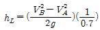
)49. 활성슬러지공법으로부터 1일 3000 kg(건조고형물 기준)이 발생 되는 폐슬러지를 호기성으로 소화처리 하고자 할 때 소화조의 용적(m3)은? (단, 폐슬러지 농도는 3%, 수온이 20℃, 수리학적 체류시간 23일, 비중 1.03)
50. 폐수 처리시설을 설치하기 위하여 다음 설계기준으로 처리하고자 한다. 필요한 활성슬러지 반응조의 수리학적 체류시간(HRT)은? (단, 설계기준 : 일 폐수량 40L, BOD 농도 20000mg/L, MLSS5000mg/L, F/M 1.5kgBOD/kgMLSS·d)
51. 인구 145000 명인 도시에 완전혼합 활성슬러지 처리장을 설계하고자 한다. 다음과 같은 조건을 이용하여 유출수 BOD5 10mg/L일 때 반응조의 부피는?
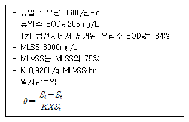
52. BAC(Biological Activated Carbon: 생물활성탄)의 단점에 관한 설명으로 틀린 것은?
53. 활성슬러지법과 비교하여 생물막 공법의 특징이 아닌 것은?
54. 수질성분이 금속 하수도관의 부식에 미치는 영향으로 틀린 것은?
55. 활성슬러지 처리변법별 F/M 비가 가장 높은 것은?
56. Cd2+가 함유된 폐수의 pH를 높여주면 수산화카드뮴의 침전물이 생성되어 제거 된다. 20℃, pH 11에서 폐수 내 이론적 카드뮴이온의 농도는? (단, 20℃,pH 11에서 수산화카드뮴의 용해도적은 4.0×10-14 이며 카드뮴 원자량은 112.4이다. )
57. 정수장 여과지의 여상 내부에 기포가 생기면 여과효율이 급격히 감소한다. 여상에 기포가 갇히게 되는 원인이 아닌 것은?
58. 수은계 폐수 처리방법으로 틀린 것은?
59. 고도 수처리를 하기 위한 방법인 정밀여과에 관한 설명으로 틀린 것은?
60. 포기조 내의 혼합액 중 부유물 농도(MLSS)가 2000g/m3, 반송슬러지의 부유물 농도가 9576g/m3 이라면 슬러지 반송률은? (단, 유입수내 SS는 고려하지 않음)
4과목: 수질오염공정시험기준
61. 현장에서 용존산소 측정이 어려운 경우에는 시료를 가득 채운300mL BOD병에 황산망간용액 1mL, 알칼리성 요오드화칼륨-아지이드화 나트륨 용액 1mL를 넣는다. 만약 시료 중 Fe(III)이 함유되어 있을 때에 넣어주는 용액은?
62. 웨어의 수두가 0.8m, 절단의 폭이 5m인 4각 웨어를 사용하여 유량을 측정하고자 한다. 유량계수가 1.6일 때 유량(m3/day)은?
63. 음이온 계면활성제를 자외선/가시선 분광법으로 측정할 때 사용되는 시약으로 옳은 것은?
64. 아연(자외선/가시선 분광법)정량에 관한 설명 중 ( )안의 내용으로 알맞은 것은?
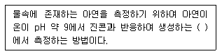
65. 다음 설명 중 틀린 것은?
66. 시료채취 시 유의사항에 관한 내용으로 가장 거리가 먼 것은?
67. 다이페닐카바지이드와 반응하여 생성하는 적자색 착화합물의 흡광도를 540nm에서 측정하는 중금속은?
68. 정량한계(LOQ)를 옳게 표시한 것은?
69. 물벼룩을 이용한 급성 독성시험법에서 사용하는 용어의 정의로 틀린 것은?
70. 부유물질 측정 시 간섭물질에 관한 설명으로 틀린 것은?
71. 수산화나트륨(NaOH) 10g을 물에 녹여서 500mL로 하였을 경우몇 N 용액인가?
72. 흡광도 측정에서 투과율이 30%일 때 흡광도는?
73. 원자흡수분광광도법에 의한 금속측정에 관한 설명으로 가장 거리가 먼 것은?
74. 다이크롬산칼륨법에 의한 화학적 산소요구량에 관한 설명으로 가장 거리가 먼 것은?
75. 원자흡수분광광도법에서 일어나는 간섭의 설명으로 가장 거리가 먼 것은?
76. 기체크로마토그래피법으로 인 또는 유황화합물을 선택적으로 검출하려 할 때 사용되는 검출기는?
77. 하천의 수심이 0.5m 일 때 유속을 측정하기 위해 각 수심의 유속을 측정한 결과 수심 20%지점 1.7m/sec, 수심 40%지점 1.5m/sec, 60%지점 1.3m/sec, 80%지점 1.0m/sec이었다. 평균 유속(m/sec, 소구간단면기준)은?
78. 폐수 중의 비소를 자외선/가시선분광법으로 측정하려고 한다. 비소 정량에 방해하는 황화수소 기체를 제거할 때 사용되는 시약은?
79. BOD 측정용 시료의 전처리 조작에 관한 설명으로 가장 거리가 먼 것은?
80. 시료의 전처리 방법인 회화에 의한 분해방법의 설명으로 가장 거리가 먼 것은?
5과목: 수질환경관계법규
81. 오염총량관리기본방침에 포함되어야 하는 사항으로 틀린 것은?
82. 상수원 구간의 수질오염경보인 조류경보 단계중 [관심]단계의 발령·해제기준으로 옳은 것은?
83. 환경기술인 등의 교육기관을 맞게 짝지은 것은?
84. 방지시설설치의 면제를 받을 수 있는 기준에 해당되는 경우가 아닌 것은?
85. 위임업무 보고사항 중 업무내용과 보고기일이 잘못 짝지어진 것은?
86. 사업장별 환경기술인의 자격기준에 관한 설명으로 알맞지 않는 것은?(관련 규정 개정전 문제로 여기서는 기존 정답인 1번을 누르면 정답 처리됩니다. 자세한 내용은 해설을 참고하세요.)
87. 다음 중 폐수종말처리시설 기본계획에 포함되어야 할 사항으로 틀린 것은?
88. 오염총량초과부과금에 관한 설명으로 틀린 것은?
89. 측정망 설치계획 결정·고시 시 허가를 받은 것으로 볼 수 있는 사항이 아닌 것은?
90. 배출시설의 설치를 제한할 수 있는 지역의 범위는 누구의 령(令)으로 정하는가?
91. 환경부장관이 설치할 수 있는 측정망의 종류와 가장 거리가 먼 것은?
92. 기타수질오염원 시설인 골프장의 규모기준은? (단, 골프장 : 체육시설의 설치·이용에 관한 법률 시행령에 따른 골프장)
93. 1일 800m3 의 폐수가 배출되는 사업장의 환경기술인의 자격에 관한 기준은?
94. 오염물질 희석처리의 인정을 받으려는 자가 시·도지사에게 제출 하여야 하는 서류가 아닌 것은?
95. 수질환경기준(하천) 중 사람의 건강보호를 위한 전수역에서 각 성분별 환경기준으로 맞는 것은?
96. 일일기준초과배출량의 산정방법으로 맞는 것은?
97. 초과배출부과금 산정 시 적용되는 위반횟수별 부과계수에 관한 내용이다. ( )에 알맞은 것은?
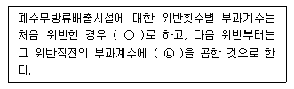
98. 수질 및 수생태계 보전에 관한 법률에서 사용하는 용어 정의로 틀린 것은?
99. 기타수질오염원의 대상과 규모 기준으로 틀린 것은?
100. 변경승인을 받아야 할 폐수종말처리시설 기본계획의 중요사항 중 “환경부령이 정하는 중요사항”의 변경(기준)으로 가장 적합한 것은?